There are 15 unique decks in Balatro. The decks in Balatro in order are: Red Deck, Blue Deck, Yellow Deck,
Green Deck, Black Deck, Magic Deck, Nebula Deck, Ghost Deck, Abandoned Deck, Checkered Deck, Zodiac Deck,
Painted Deck, Anaglyph Deck, Plasma Deck, and last but not least, Erratic Deck.
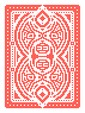
Red Deck:
The Red Deck gives you an extra discard, making it easier to draw the cards you need!
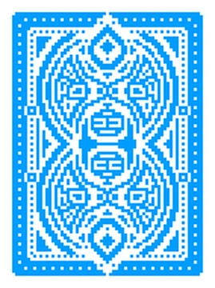
Blue Deck:
The Blue Deck gives you an extra hand, making it easier to get past the first few antes by being able to score!
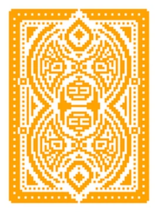
Yellow Deck:
The Yellow Deck gives you an extra $10 at the start of the game to help you start your run!
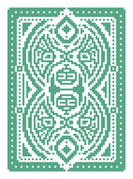
Green Deck:
The Green Deck gives you $2 dollars per remaining hand and $1 per remaining discard at the end of the round,
but you get no intrest. Intrest in Balatro is simple, you get $1 dollar per $5 dollars at the end of round.
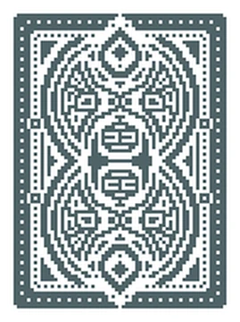
Black Deck:
The Black Deck gives you one extra joker slot and takes away a hand you get to play.
This makes it way easier to get joker synergy but it makes it harder to score by having less hands to play.
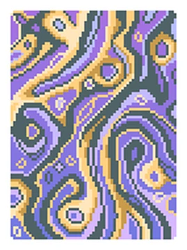
Magic Deck:
The Magic Deck starts you off with the Crystal Ball voucher and 2 copies of The Fool tarot card
This makes it easier to stack consumables and The Fool copies the last used tarot or planet card.
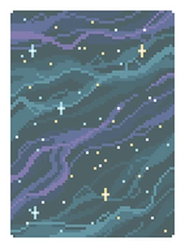
Nebula Deck:
The Nebula Deck starts you off with the Telescope voucher and cuts out one of your consumable slots.
This makes it easier to find the planet card that relates to your most played hand, while making it harder
to have consumable cards because you don't have room for them.
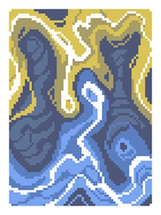
Ghost Deck:
The Ghost Deck starts you off with a Hex spectral card and it also gives you the buff of being able to
see spectral cards in the shop. This makes it insanely easy to buff your deck!
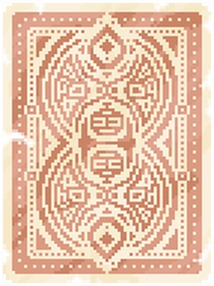
Abandoned Deck:
The Abandoned Deck cuts ALL face cards from your deck. This makes it easier to score straights with
numbered cards.
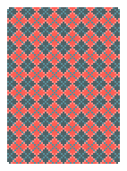
Checkered Deck:
The Checkered Deck cuts ALL diamond and club cards and replaces them with hearts and spades. This makes it
really easy to play flushes and if you get lucky, you can play straight and royal flushes!
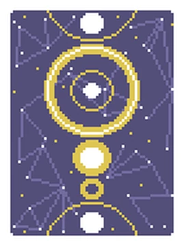
Zodiac Deck:
The Zodiac Deck starts you off with the Tarot and Planet Merchant vouchers, as well as the Overstock
voucher. This makes it easier to find tarot and planet cards in the shop, making it easier to level
up your hands and also helps you with your deck fixing!
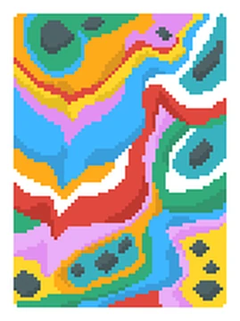
Painted Deck:
The Painted Deck gives you +2 hand size but it takes away one of your joker slots. Extra hand size is
essential to drawing the cards you want but having one less joker slot means you need to think and
strategize about your game plan.
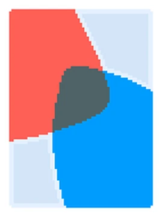
Anaglyph Deck:
The Anaglyph Deck gives you a double tag every time you beat a boss blind. This makes it easier to get a lot
of tags, which makes it easier to get a lot of tags.
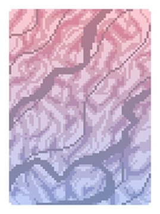
Plasma Deck:
The Plasma Deck balances chips and multiplier by averaging them together, then squaring that average to
create massive scores. This deck itself also is balanced by taking all blind values and multiplying
them by 2x.
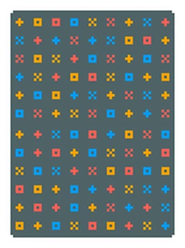
Erratic Deck:
The Erratic Deck is the final edck in Balatro. Can you guess what it does? That's right! It randomizes
all cards in the deck! You can have runs with a ton of face cards and runs with none lol.
Fun Fact: There is a seed for erratic deck that makes every single card the 10 of spades.
That is all of the decks in Balatro! Now that you know what they all do, you can pick your
favourite and start gambli- I mean, playing Balatro!